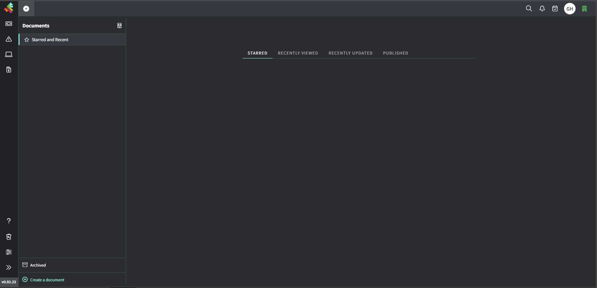

Documents
Introduction
The document module is designed in a way to allow users to create documents which will be visible MSP wide, to improve collaboration among Team members who need to work on or refer to same area of knowledge. It is an effective method of sharing information among staff and other service providers. There are two levels of documents
- MSP – This level of document is visible to all the users of an MSP
- Client – This level of document is visible to only those belonging to the Client’s group.
Document Screen
The landing screen of Document module is divided into two sections:
Left side navigation
This panel has all the items that can be accessed on click. This section includes:
- Starred and Recent
- Client Focus (filters documents of a specific Client)
- List of saved documents. (By default, all MSP level documents are listed)
- Archived
- Create Document
View pane
This section displays the content of the item accessed from left navigation

Gorelo Document Features
The feature provided by Gorelo to change and layout your documents are listed below:
- Create / Edit / View Documents
- Star Document
- Nested documents
- Clone
- Move
- Archive
- Make Public
- Starred and Recent
- Download PDF